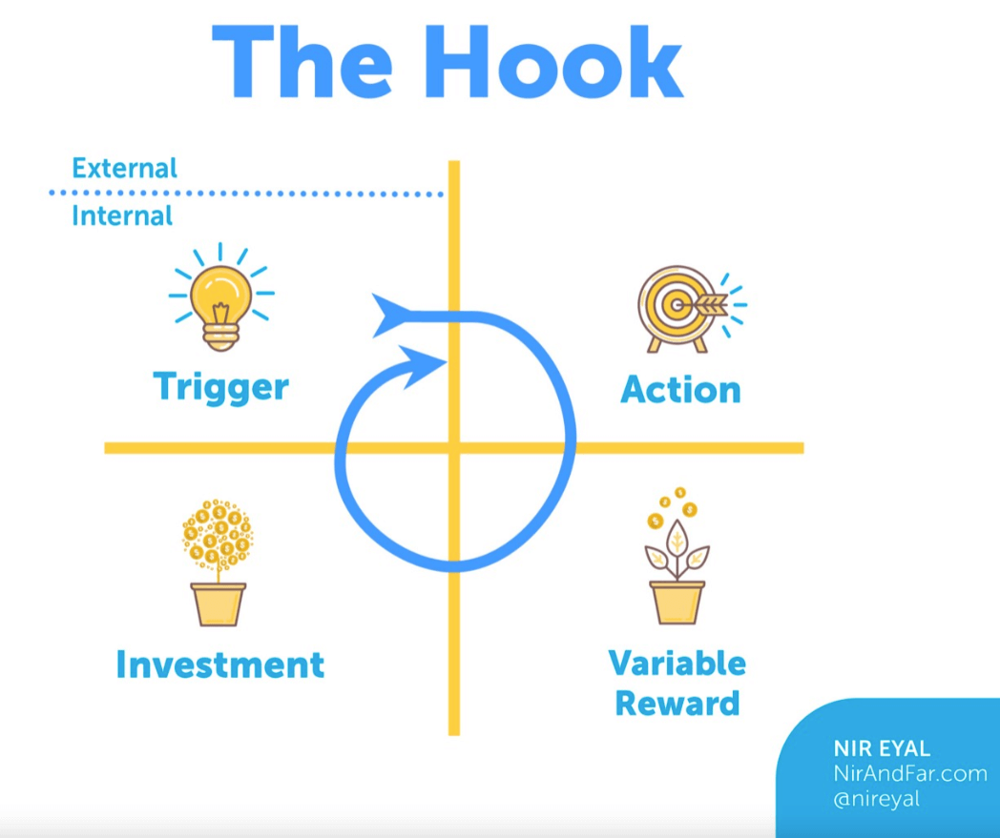
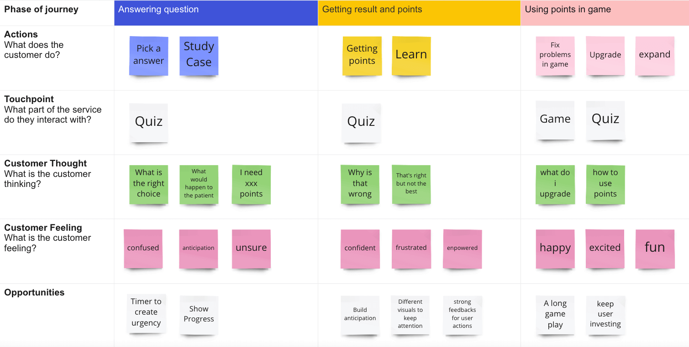

Client:
AAD - A life science consulting organization
Roles:
Research + Design
Unity UI Prototype
Timeline:
Prototype: Jan - March, 2022
Challenge:
Creating an engaging core game-play mechanism that makes information easy to absorb
Product Description:
A mobile game that assists medical students in cardiology disease diagnosis training
Product Design
Design Process: Double Diamond

Goal:
To find the best way to help medical students/non-cardiologst doctors to learn about cardiac disease diagnosis
01. Discover
Step 1. Secondary Research
Regular Cardiology Training Process
Summary: The whole cardiology training process to become a cardiologist usually takes several years to complete and covers many different areas from regular internal medicine to a wide range of cardiac conditions
Competitive Analysis: CardioEX
Summary: CardioEX is a mobile game that focuses on cardiology education. It has great visuals and a good level system to keep the user engaging for a long period of time but it lacks an emphasis on the user improvement itself and it does not have a system in place to ensure the effectiveness of learning
(CardioEX Game)
Step 2. Primary Research (Interview)
Interviewee 1: Gill D. (Cardiologist)
A cardiologist will not be the product's target user but the purpose of this interview is to fully understand the process of diagnosing cardiac disease and the thinking pattern behind a professional cardiologist so it can be embedded into the product
Interviewee 2: Ryan C. (A medical student)
Interview Questions
- 1. How much do you know about cardiology?
- 2. Do you recognize the following acronym and know what they are for?
(First two questions are to see if the user understand the basics of cardiology diagnosis) - 3. What kind of cardiology training have you received?
(Past training experience as potential comparison to our product)
Key Quotes
"Most internal medicine doctors have received eduction in cardiology to at least understand the basic treatment methodS."
Key Quotes
"The hard part of cardiac disease diagnosis is to find the most optimal solution from all potential solutions"
Empathy Map

02. Define
Problem Statement
Cardiology students often need a large amount of real case practices to learn to find the most optimal treatment for cardiac disease but the process is often repetitive and mundane which makes it hard to absorb the information and reduces learning efficiency
Potential Solution 1:
A gamified quiz based app that focuses on real case diagonosis question based learning
Pros:
More formal and technical and can be integrated into most medical organizations (higher scalability)
Cons:
Not as engaging as a game
Potential Solution 2:
A full-on mobile game with real case quiz questions as a feature to earn points to be used in the game
Pros:
More interactive and engaging. Potentially better learning outcome for users.
Cons:
Takes the focus away from the knowledge and more towards the game itself
Conclusion
We decided to choose a full-on mobile game as our solution because a game is potentially easier to create internal trigger (from Hooked Model) and a positive reward feedback loop for our user to achieve a better learning outcome
03. Develop
Core Challenge: Integrating real life cardiology diagnosis cases into game play mechanism
Product Requirements
- 1. Real cases presented as multiple-choice questions
- 2. A points system for different answers
- 3. A game play using points earned from answering questions
User Journey
Game Play Design
Since our users can potentially play this game for several months to even years. We have decided the best option is to create an incremental game which requires users to repeat a certain task (answering multiple-choice questions) to earn in-game currency which can be used in making game progress
(incremental game example: Sim City)
Game Design Idea
Eventually we came to conclusion that a hospital building game might be the best solution because students can also learn about hospital management in the process and it would allow us to scale the product beyond cardiology as well.
(hospital building game example: Project Hospital)
04. Deliver
Lo-fi Design of title screen and quiz screen
We put an emphsis on the question and options on the quiz screen and some progress information as feedback to the user and a timer to create urgency. 3 choices will be given and one is the most optimal choice, one is an ok choice and the last one is a wrong choice. This design choice came from user interview where the user talked about an important part for diagnosis is to choose the most optimal option from all potential solutions
Hi-fi Design
Overall UI design is to give a techy and minimal feeling to the game itself. A heart beat graph is added to the quiz screen to simulate the heart condition of the patient. The big crystal heart at the background is used as feedback system to let users know the result of the choice that they made. Patient condition is highlighted in blue and patient information is shown in a separate box so the doctors would know if this is a returning patient or a new patient.